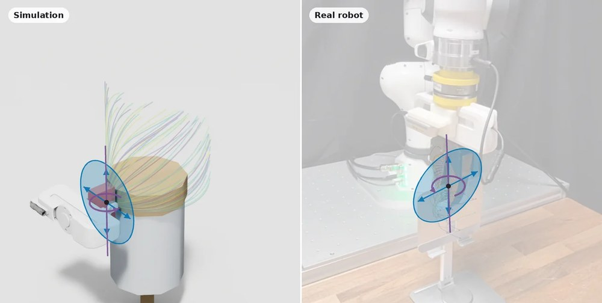

Constraint-Decomposed Impedance Control from Generative Policy for Articulated Object Manipulation
Conference on Robot Learning (CoRL), 2026Spotlight
The motions a generative policy samples from one observation lie mostly along the directions an articulated object can move. The paper extracts those directions and makes the robot stiff along them and compliant across them, which lowers the contact forces that fight the object's constraints. I built the controller code and setup for the real-robot experiments.